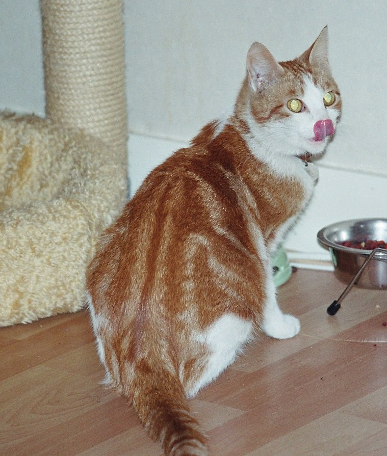
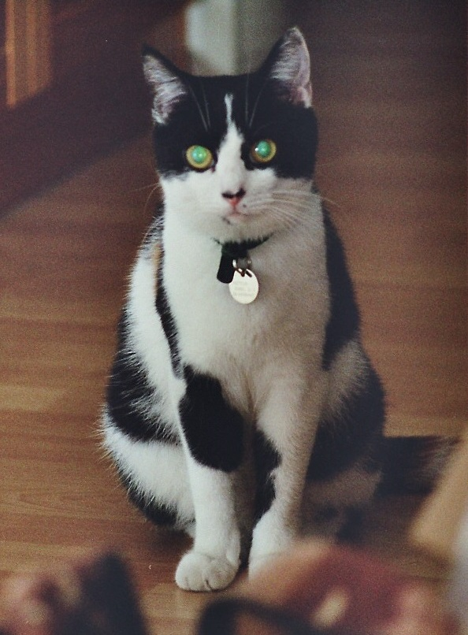

Karin's Katten
Ik heb van jongs af aan katten gehad. Soms eentje, maar vaak 2 of meer tegelijk.
- Speedy
- Droppie
- Drippie
- Mattie
- Tommie
- Scarlet
- Madeline
- Nicky
- Lilly
- Robin
- Boeboe
Kindertijd en Jeugd
Speedy
Speedy was een zwarte kat, die al bij mijn ouders woonde vóór ik geboren werd. Helaas kreeg hij later de vervelende gewoonte om dode vogeltjes thuis te brengen, wat ik als peuter ontzettend interessant vond! Voor mijn ouders echter een reden om hem weg te doen.
Drippie en Droppie
Deze broer en zus, mooi zwart/wit gevlekt, zijn bij ons komen wonen in ons nieuwe huis in België, waar we naartoe verhuisden toen ik 6 was. Droppie is 2 jaar later door een auto overreden en Drippie is 4 jaar later nooit meer thuisgekomen van de jacht.
Mattie
Een jonge rode kater kwam brutaal ons huis binnenlopen, enkele weken nadat Droppie overleden was, en is nooit meer weggegaan. Mattie heeft nog 3 verhuizingen meegemaakt en is hoogbejaard geworden.
Eigen katten
Tommie
Een goede vriendin van mij had een superlief kitten genomen. Ik mocht al een keer op hem passen toen
ze 2 weekjes
met vakantie ging, maar toen Tommie 9 maanden was ging zijn baasje samenwonen met haar vriend en die
was
allergisch voor katten.
Ik woonde toen nog op een flatje, dus naar buiten kon hij niet. Maar toen dat na een verhuizing wel
mogelijk
was, heeft hij zich ontpopt tot een goede jager. Zelfs kikkers kwam hij thuisbrengen...
Scarlet en Madeline
Twee jaar later zijn deze 2 dames erbij gekomen. We hadden bij een boer 2 mooie kittens uitgezocht om Tommie gezelschap te houden. Het duurde niet lang of ze brachten met zijn driëen hele duiven thuis!
 